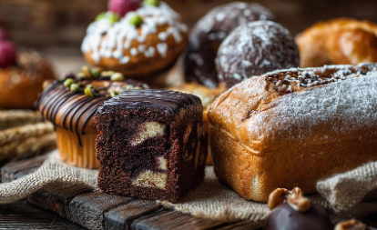
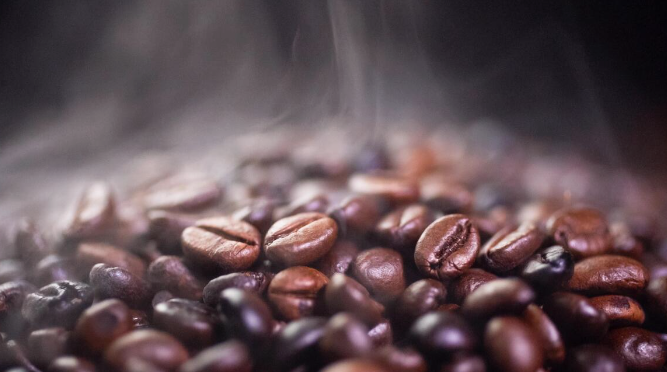

About Saira Coffee
Saira Coffee began as a small neighborhood café with a deep passion for specialty coffee and meaningful community connections. What started as a simple idea to serve a better cup of coffee quickly grew into a place where people gather, share stories, and slow down from the rush of everyday life. We serve premium coffee beans that is the heart of the cafe experience. They are carefully selected, often grown at higher altitudes where cooler temperatures allow the cherries to ripen slowly. This slow maturation develops deeper sugars and more complex flavor compounds, resulting in a smoother and warming cup.


Our mission
At Saira Coffee, we believe in specialty roasting, ethical sourcing, and exceptional daily experiences. From rich espresso to smooth lattes. We pour emotion in cup and bake with love and care. Our mission is to be cozy and relaxing escape with your favourite drink and warm bakes.
